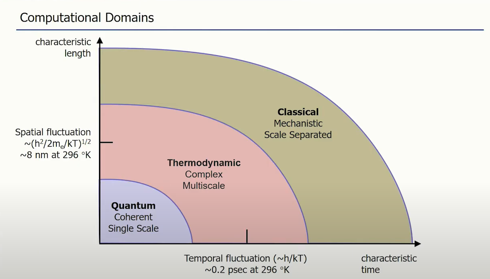
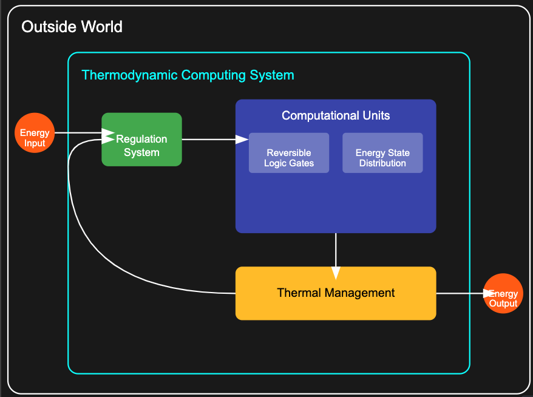
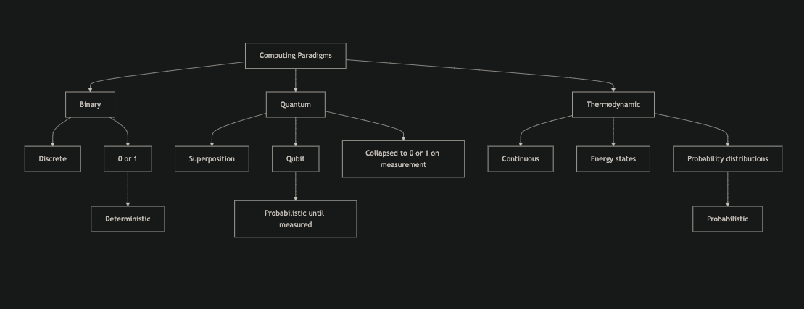

Thermodynamic Computing
Principles, Promises, and Challenges
1. Introduction
- Emerging field in computing
- Leverages principles of thermodynamics
- Potential for significant energy efficiency
- Novel computational capabilities
Binary Computing
- Based on discrete states: 0 and 1
- Deterministic sampling behavior
- Each bit has a definite state at any given time
- Sampling yields exact, reproducible results
- doesn't care about quantum effects
Quantum Computing
- Based on quantum bits (qubits)
- Probabilistic sampling behavior
- Qubits can exist in superposition of states
- Sampling causes wave function collapse
- Results are probabilistic, requiring multiple measurements
- Leverages quantum phenomena for certain computations
- doesn't care about thermodynamic effects by operating at absolute zero
Computational Paradigms

2. Theoretical Models
- Reversible Computing
- Adiabatic Computing
- Brownian Computing
Reversible Computing
- Based on reversible logic gates
- No information loss during computation
- Theoretically zero energy dissipation
- Challenges: implementing fully reversible systems
Adiabatic Computing
- Focuses on minimizing energy dissipation
- Operates through slow, gradual transitions
- Trade-off: energy efficiency vs. computation speed
- Potential for ultra-low-power computing
Brownian Computing
- Harnesses random thermal motion for computation
- Inspired by molecular processes in biology
- Potential for massively parallel computation
- relies on thermal/electronic fluctuations to perform computations
3. Promises
- Improved energy efficiency
- Reduced energy usage in cooling
- Potential for fully reversible computation
- realtime evolutive computation (robotics, self-driving cars, etc.)
4. Value Space and Sampling
- Based on continuous energy states
- Probability distributions
- Information encoded in energy state distribution
- Sampling yields probabilistic results as a function of the energy state distribution throughout
the circuit
- software is based on probability distributions (infinite inputs)
5. Probabilistic Nature
- Ensemble of particles
- Rapid microscopic fluctuations
- Statistical system description
- Probability distribution-based information encoding
6. Challenges

- Software design for wave function inputs
- Function complexity vs. single-variable limitation
- Handling infinite wave function forms
- Input reproducibility
- Hardware regulation and isolation
7. Future Directions
- Material research
- New mathematical frameworks
- symbiosis with classical computing
- Error correction mechanisms
Computational Paradigms

Conclusion
Thermodynamic computing offers revolutionary potential but faces significant challenges in practical
implementation.
Ongoing research and technological advancements may pave the way for this paradigm shift in
computing.